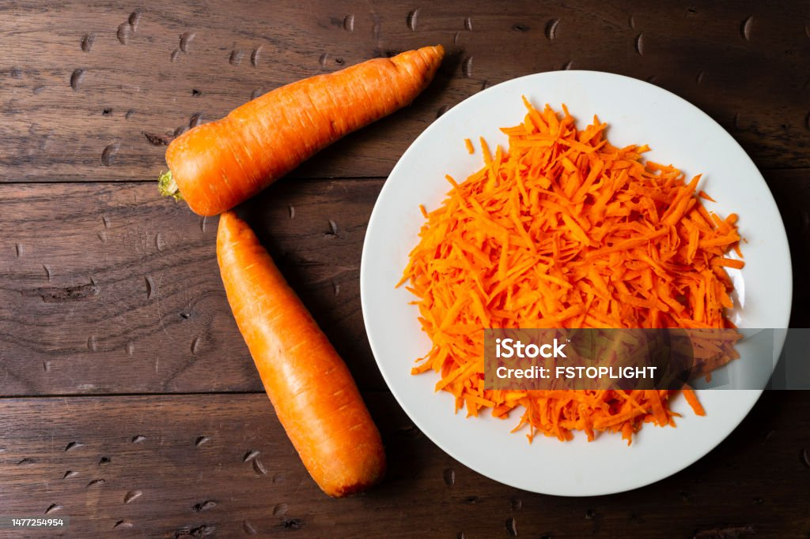
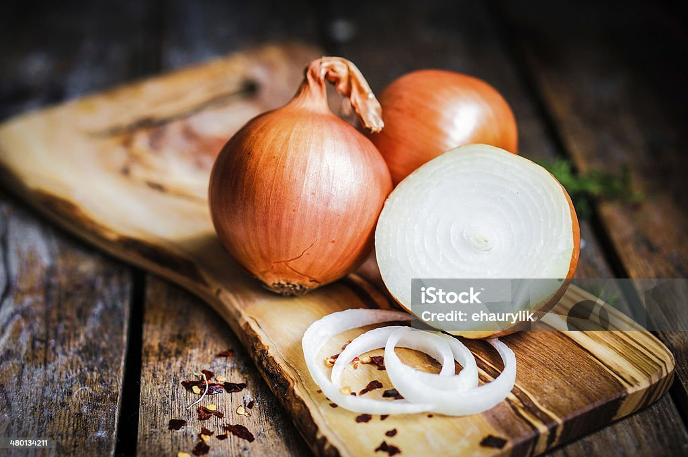
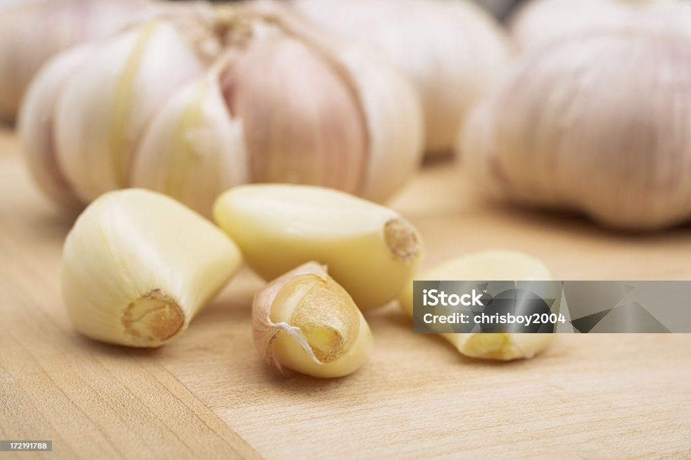
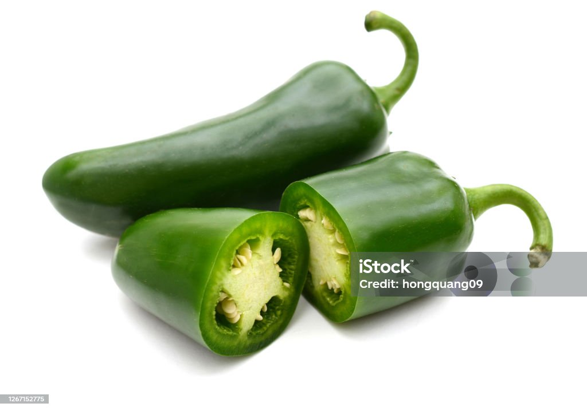
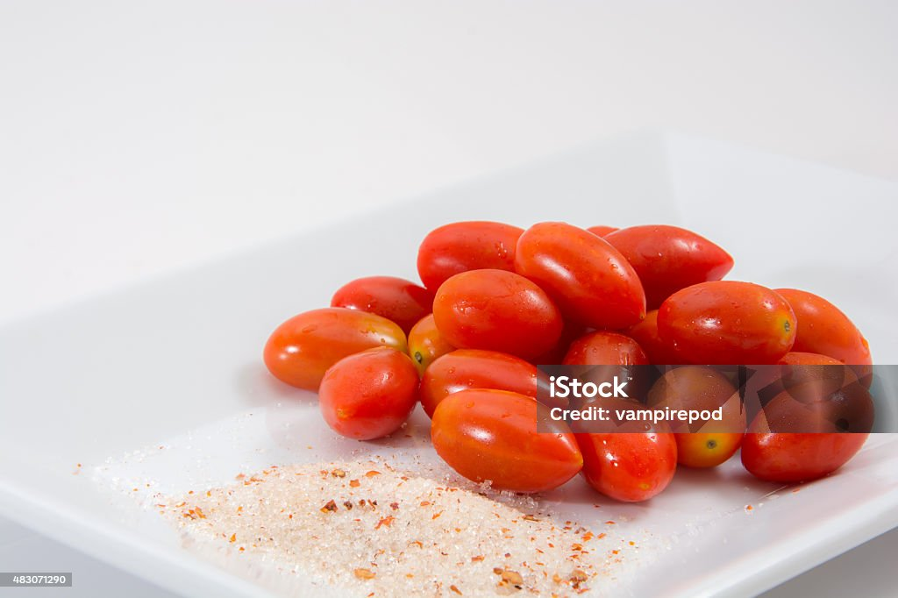
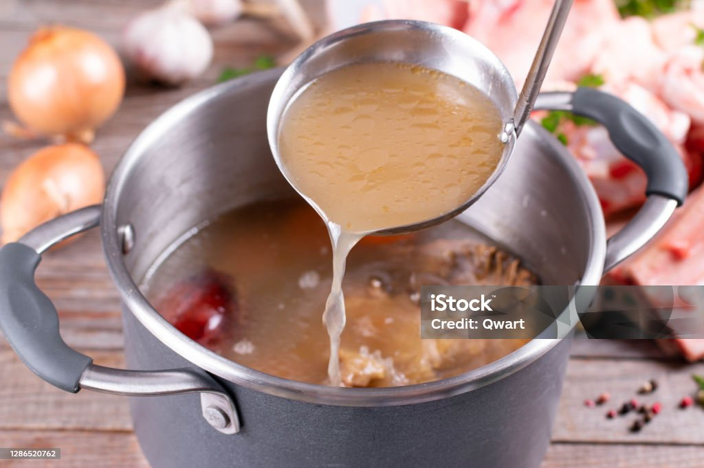
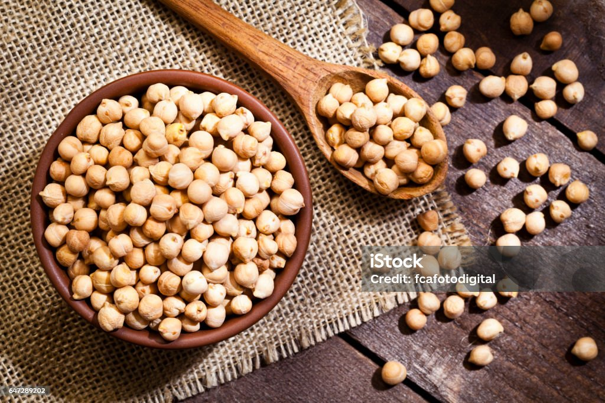
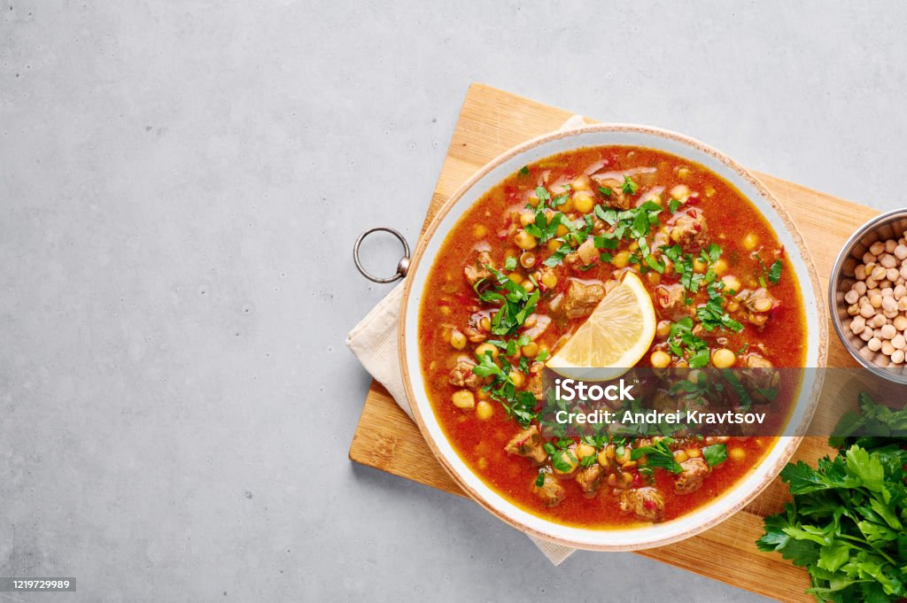

Brown Stew Garbonzo Beans

About the Recipe
This is a savory meal loaded with antioxidants, immunity boosting vitamin C, fiber, and cancer fighting vegetables. Your collection is already set up for you with fields and content.
Add your own content or import it from a CSV file. Add fields for any type of content you want to display, such as rich text, images, and videos. Be sure to click Sync after making changes in a collection, so visitors can see your newest content on your live site.
Ingredients
- 1/2 shredded carrots
- 1 onion
- 1 tbsp onion powder
- 1 tsp. allspice seasoning
- 1 garlic clove
- 1 bell pepper
- jalapeno or scotch bonnet pepper (optional)
- 1/2 tomato
- 1 tbsp soy sauce
- 1 tbsp ketchup
- 1/2 cup chicken broth or stock
- 2 cans low sodium garbanzo beans
- 2 tbsp avocado oil or olive oil

Carrot

Onion

Garlic

Bell Paper

Jalapeno

tomatoes

Soya Souce

Ketchup

Chicken Stock

Garbanzo

Olive Oil
Preparation
-
Step 1
- Heath pan and add avocado or olive oil.
-
Step 2
- Saute veggies (all but tomatoes).
-
Step 3
- Season with onion powder, garlic powder, ginger, all spice, and peppers to liking.
-
Step 4
- Add garbanzo beans, chopped tomatoes, soy sauce, ketchup, veggie/chicken broth or stock, and add thyme.
-
Step 5
- Cover an let simmer together for 15-20 minutes until beans and veggies are nice an tender - Serve warm on a bed of rice or quinoa.
